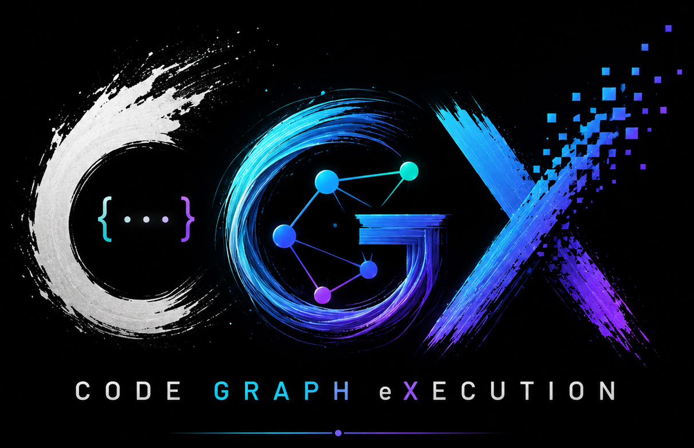

Turn an interchangeable model
into an autonomous developer.
CGX is a modular orchestration layer that transforms an LLM — local or remote — from a
passive chatbot into a coding agent. Rather than a free-form loop, it drives
deterministic, plan-driven agents that index your repository, retrieve
grounded context, and write self-tested code. The model is interchangeable;
indexing, embeddings, retrieval, sessions, and telemetry never leave the machine.
Works fully offlinePython 3.10 – 3.12Linux · macOS · WindowsMIT

The premise
Small models, sharp context.
A hosted assistant sees the file you opened and guesses at the rest. CGX inverts that:
the heavy lifting happens in a retrieval pipeline that runs on your machine and knows
the whole codebase, so a 3B local model can be put on equal footing with a frontier one
by feeding it smaller, sharper, grounded prompts.
No daemon, no account
The parser needs no Tree-sitter binaries for Python, the graph needs no database, the
embedding cache is one .npz file, and the session store is
SQLite. Open a project, run the UI, done.
Model-agnostic by construction
Ollama, any OpenAI-compatible endpoint, native Google Gemini, or a self-hosted server
on a custom IP and path — switchable from Settings with a live Ping
latency check. Keys live in your OS keyring.
Nothing lands unapproved
Every branch pauses for a typed human Decision. Every overwrite is
mirrored under .cgx-backups/ and a whole run can be undone
with one rollback call.
How it works
Repo → records → graph → grounded answer.
One pass over your working tree produces everything the retriever and the agent need.
Re-indexing is incremental by default: a parse cache keyed on each file's hash and a
content-addressed embedding cache mean a touched-a-few-files repo re-indexes almost
instantly.
01
Parse
Walk the repo honouring .gitignore and a 1 MB cap; emit one
chunk per file, class, function and method.
cgx.parser
02
Graph
Derive calls, module,
attr and defined_in edges over
the chunk set.
cgx.graph
03
Embed
Build two views — intent (docstrings, names) and
impl (signatures, bodies) — concurrently into FAISS.
cgx.embeddings
04
Retrieve
Fuse semantic, BM25 and graph-expansion hits with Reciprocal Rank Fusion, then rerank.
cgx.retrieval
05
Answer
Build a tiered Code Map prompt, stream the reasoning sketch, then the grounded answer
or a tested diff.
cgx.answer
flowchart TD
subgraph Setup[1. Setup & Index]
direction LR
I[1. Install pip install + pull local model] --> N[2. Index your repo reads files, respects .gitignore]
end
subgraph Usage[2. Choose your mode]
direction TB
A[💬 Ask Streaming explanation with citations]
P[🛠️ Plan Code-change diff, auto-tested]
AG[🤖 Agent Multi-step plan, live progress]
end
N --> A
N --> P
N --> AG
A --> G[Grounded answer With citations to exact files/lines]
P --> G
AG --> G
style Setup fill:#0f172a,stroke:#38bdf8,color:#fff
style Usage fill:#0f172a,stroke:#a78bfa,color:#fff
style G fill:#0b1220,stroke:#f59e0b,color:#fff
style A fill:#0b1220,stroke:#34d399,color:#fff
style P fill:#0b1220,stroke:#f59e0b,color:#fff
style AG fill:#0b1220,stroke:#a78bfa,color:#fff
The user journey — install → index → ask / plan / agent → grounded answer.
Hybrid retrieval
Four signals, one ranking.
Semantic search runs over both views, BM25 covers the lexical tail, the graph pulls in
structural neighbours, and symbol matches get boosted. Everything fuses through RRF,
with an optional cross-encoder rerank on the head of the list.
Two-view semantics. The intent view answers "what is this for", the
impl view answers "how does it do it" — searched in parallel, joined before fusion.
Graph expansion. Neighbours of the top hits enter the candidate set
with a tunable graph_bonus.
Tiered Code Map prompt. When neighbours are surfaced, direct matches
keep full bodies while neighbours collapse to one-line
name(signature) -- docstring stubs, so a small model
never spends its window on references it only needs to know about.
Window-aware budgets. Per-tier budgets scale with the model's
advertised context length.
Optional rerank. The cross-encoder lazy-loads only when enabled and
silently falls back to RRF order if the ML stack is absent.
HybridConfig
Default
Effect
graph_bonus
0.2
RRF-scaled bump for chunks reached via the import/call graph.
symbol_boost
0.5
Bonus when an identifier or path matches a question token.
enable_reranker
False
Run a cross-encoder over the fused head.
reranker_top_n
30
How many head candidates to re-score.
reranker_weight
1.0
Convex blend between cross-encoder and RRF score.
The agent harness
Not a chat loop — a harness that drives the model.
This is the heart of CGX: the orchestration layer that turns an interchangeable model into
a coding agent. Instead of letting an LLM improvise in a free-form loop, the harness runs a
deterministic, plan-driven chain — a pure-Python router owns every
transition, the loop advances one typed task at a time, and the model is called only to do
the focused work inside a step. Everything is grounded, checkpointed, approvable, and
reversible.
The agent proposes directions, investigates the one you pick, recommends concrete
options, and only drafts a change plan once you have chosen. Nothing touches disk
before the approval checkpoint.
Give it a plain-language idea — "create a FastAPI todo app" — and it asks 3–6
clarifying questions, plans a layered file manifest, generates each file with cross-file
context, provisions a project-local environment, and runs the project's own tests.
Deterministic control, focused calls
A pure-Python router — never the LLM — decides what happens next, walking an explicit
task chain and pausing at every branch for a typed Decision. The model
is invoked only for the bounded work inside a step, so control flow is reproducible and
nothing improvises its way onto disk.
Self-testing, then self-repairing
Before you ever see a change, diffs are parsed, syntax-checked and run against impacted
tests in a sandbox — with the environment bootstrapped first, so a missing package reads
as a collection error, not a fake test failure. Failures feed a bounded, progress-aware
repair loop that stops instead of flapping.
Persistent, reversible, one loop everywhere
Sessions survive restarts in .cgx/sessions.db and resume
identically from the web UI, the terminal dashboard, or cgx
agent. Every overwrite is mirrored under .cgx-backups/
and a whole run undoes with one rollback call; typed budgets backstop a runaway loop.
And when you want it to just build the whole thing, the same harness drives a plan-driven
multi-role Swarm. →
The Swarm
When you want it to just build the thing.
Swarm is a deterministic, plan-driven build engine — a session mode
(cgx agent --mode swarm) that replaces the free-form loop with
three router-driven roles. Every stage is propose-then-validate: the
model proposes, deterministic invariants enforce. It is polyglot — Python and JS/TS are
first-class, and a new stack is a skill plus a test runner, not a change to the swarm.
Role 1
Tech Lead — plans, never codes
Resolves the goal's active skills, drafts a JSON WORK_PLAN
(files, depends_on edges, per-file contracts), then
normalises, topologically orders, and gates it on buildability — with a bounded
corrective re-ask. Per-ecosystem scaffolding (a
requirements.txt or package.json,
a README, a test per module) is injected deterministically.
Role 2
Developer — one file per turn
Implements exactly one planned file at a time, in dependency order, grounded on the
real on-disk content of its dependencies. A generation ladder falls back to a
deterministic AST assembler, and two hard gates — a phantom-import gate
and a no-stub gate — reject an unused import or a
pass-bodied contract function before it can break the suite.
Role 3
Verifier — the real build is the authority
Reconciles each component's manifest against its actual imports, runs static structural
checks, then a polyglot dry-run: pytest for
a Python component, npm test /
npm run build for JS/TS. A red suite on a clean tree drives
failure-driven repair rather than a false pass.
SWARM_TECH_LEAD→SWARM_DEVELOPER⟲ per fileSWARM_VERIFY⟲REPAIR
Bounded auto-repair
Mechanical breaks are fixed without the LLM: an AST import injector
prepends missing imports resolved from plan contracts, and
contract renegotiation merges an amended signature into the plan
instead of failing the build.
Repair that ramps, then stops
When a structurally-clean tree still fails, an AST function-logic repair
rewrites the enclosing function and the loop scales temperature
0.2 → 0.8 across up to five bounded rounds to break
repetitive output — never a silent green on a red suite.
Live Swarm Operations feed
The Agent page renders a Swarm Operations timeline of
swarm_beat telemetry — role, phase, target file, tool calls
and pass/fail — streamed over SSE, with Developer tasks nested under the Tech Lead in the
task tree.
flowchart LR
Goal[Objective cgx agent --mode swarm] --> TL
subgraph Swarm[Router-driven roles]
direction TB
TL[Tech Lead SWARM_TECH_LEAD plan + contracts + toposort]
DEV[Developer SWARM_DEVELOPER one file / turn, grounded]
VER[Verifier SWARM_VERIFY polyglot build + test]
end
TL -->|WORK_PLAN| DEV
DEV -->|next file| DEV
DEV --> VER
VER -->|red suite| REP[REPAIR AST inject · logic fix temp 0.2 → 0.8, bounded]
REP --> VER
VER -->|green| Done[Runnable project or honest FAILED]
style Swarm fill:#0f172a,stroke:#a78bfa,color:#fff
style TL fill:#0b1220,stroke:#38bdf8,color:#fff
style DEV fill:#0b1220,stroke:#34d399,color:#fff
style VER fill:#0b1220,stroke:#fbbf24,color:#fff
style REP fill:#0b1220,stroke:#fb7185,color:#fff
style Done fill:#0b1220,stroke:#34d399,color:#fff
The swarm loop — plan once, generate file by file, verify the real build, repair a red
suite under a hard ceiling. Deterministic invariants gate every stage.
Three surfaces, one engine
Drive it however you work.
A React/Vite web UI streaming over Server-Sent Events, a stdlib-only terminal dashboard
that works cleanly over SSH, scriptable subcommands, and a plain Python API. They share
the same retrieval engine, the same session store, and the same cancel token.
launch
# after `pip install -e ".[ui]"`$ cgx-ui
# serving on http://127.0.0.1:8765
Setup — pick a provider, Ping it, detect hardware, save profiles.
Index — point at a root or upload a zip; cancel mid-run.
Ask — streaming thought-process panel, then the grounded answer.
Plan — validate diffs and run impacted tests before you read them.
Agent — the task DAG with status icons, facts, artifacts, and Undo; explore, greenfield, or swarm mode with a live Swarm Operations feed.
Ops — ten-tab MLOps hub: metrics, activity, monitoring, cost, feedback, governance, health, and a Trace explorer.
Hardware — fit verdicts per model; fully offline.
cgx <command>
# build an index into the auto-discovered .cgx/index location$ cgx index --project-root . --out-dir .cgx/index
# grounded, streamed answer over the index$ cgx ask "What does parse_codebase do?" --think
# a self-tested code-change plan$ cgx plan "Add a --json flag to the query command" --self-test --run-tests
# one unattended turn of the session agent loop$ cgx agent "Add docstrings to every public function in cgx.parser"# provider + hardware + index status, or the interactive dashboard$ cgx status
$ cgx
python
from cgx.pipeline.auto import run_index_auto
from cgx.answer.engine import answer_with_llm
from cgx.answer.providers import OllamaProvider
run_index_auto(project_root="./", out_dir="/tmp/cgx_index")
prov = OllamaProvider(model="qwen2.5-coder:3b")
ans = answer_with_llm(
"/tmp/cgx_index/indices",
"/tmp/cgx_index/records.jsonl",
"What does parse_codebase do?",
prov,
)
print(ans["answer_md"])
Ops & observability
A production MLOps layer, local-first and zero-config.
The /ops hub is a single console with ten tabs
of live signal. Every store is SQLite (WAL, $CGX_CONFIG_DIR-aware),
metrics are collected in-process, and every recorder is best-effort — an observability
failure can never break a request.
In-process Prometheus series at GET /api/metrics (RED-style
LLM latency / cost / tokens) plus a curated @traced
function-call tracer (CGX_TRACE) that logs every LLM call's
full redacted prompt + response — browsable in the Trace tab.
AIOps monitoring
Groundedness, retrieval-drift, cost-anomaly and repair-health checks persist
Alert records (CGX_MON_*),
surfaced at GET /api/monitor/alerts and the Monitoring tab.
Cost & quota
Truthful token/cost accounting (CGX_MODEL_PRICING) plus
per-owner day budgets with soft-warn / hard-stop
(CGX_BUDGET_*).
Feedback flywheel
Thumbs up/down + comments that export down-votes into eval candidates and unify with
cross-session lessons, closing the loop back into the offline eval harness.
Data governance
Configurable retention/TTL, right-to-erasure, and a PII scan/scrub pass beyond
credential redaction — /api/govdata/*, driven from the
Governance tab.
Reliability & deploy
/healthz (liveness) and /readyz
(readiness) probes with Prometheus SLO rules, and a container / Compose (CGX + Prometheus
+ Grafana) / Helm path under deploy/.
Install
A small core, and an ML stack you opt into.
The core install skips torch,
transformers and
sentence-transformers entirely — heavy modules are imported
lazily, so the CLI and UI work out of the box. Add the ML extras only when you want local
embeddings or the cross-encoder reranker.
$ pip install -r requirements.txt -r requirements-ml.txt
$ pip install -e ".[codegen]"# pull a small local model (recommended default)$ ollama pull qwen2.5-coder:3b
$ cgx-ui # http://127.0.0.1:8765
Extra
Adds
ui
FastAPI + Uvicorn web UI backend
embeddings
sentence-transformers, transformers, torch
faiss
faiss-cpu — large speedup over the numpy fallback
parsers
tree-sitter grammars for JavaScript / TypeScript / TSX ingestion
codegen
unidiff for stricter diff parsing
keyring
OS keyring for API-key storage
mcp
Model Context Protocol SDK — external tool servers for the swarm
viz
matplotlib — regenerate the book diagrams
dev
pytest, ruff, mypy
No model yet? Browse and pull one.
Settings → Browse Hugging Face lists GGUF repos from the Hub, sizes each
against your hardware with Check fit, and Pulls it
straight into your local Ollama daemon — then re-aliases the download to
a clean local name (ornith-1.0-9b-gguf) instead of the full
hf.co/<repo> address.
A hardware-aware picker for 21 models.
Settings → Hardware detects your RAM / VRAM — including Apple Silicon
unified memory and Metal (MPS) — and annotates a curated catalogue of 21
local models with ✅ / ⚠️ / ❌ fit verdicts, merging in what you've already pulled. It is
pure-offline: annotating fires no network call.
Trust model
The complete list of egress paths.
Not a policy statement — an inventory. Parsing, embedding, indexing, retrieval and
reranking are on-device with no exceptions. The only way bytes leave your machine is the
LLM endpoint you configured yourself.
Activity
Egress
Destination
Parse · embed · index
No
On-device.
Retrieval · rerank
No
On-device.
Sessions · profiles · cache
No
~/.cgx/, 0600 files.
Local LLM (default)
Loopback
localhost:11434 — Ollama.
OpenAI-compatible
Yes
The exact base URL you configure.
Google Gemini
Yes
generativelanguage.googleapis.com.
Startup telemetry
Opt-in
Off by default; install UUID + version only.
Secrets at rest. API keys go to the OS keyring — Keychain, GNOME
Keyring / KWallet, Windows Credential Manager — falling back to a
0600 file. ~/.cgx/ is chmodded
to 0700.
Writes are bounded and reversible. Apply and scaffold tasks write only
under the configured Project Root, mirrored per run under
.cgx-backups/<run_id>/.
No auth on the local API. The server binds
127.0.0.1:8765 by default and ships no login layer — that is
safe on loopback, and anything else belongs behind an auth-enforcing reverse proxy.
Documented, not hidden.
Telemetry is a single opt-in ping. Enabled only by
CGX_TELEMETRY=1, carrying a random install UUID and the
version. No prompts, no code, no paths, no model names.
Each supported technology (react,
fastapi, nextjs,
vue, tailwind,
flask, django,
express, python_cli,
sqlite) bundles detection from the goal, the prompt fragment
the model sees, and a structural validator for the diffs it produces. Multi-skill goals
compose — "React UI + FastAPI backend" activates both. Adding a framework needs no
agent-layer edits.
Tested where it matters
The suite covers the parser, the embedding cache, hybrid retrieval and rerank, the
codegen pipeline, the session router / executors / store, the hardware matrix, the rate
limiter, and an end-to-end index → query smoke test with a deterministic fake embedder —
no model download, no GPU. CI runs a core matrix on Python 3.10 – 3.12 that asserts the
lazy-import path stays clean, plus an optional ML job.